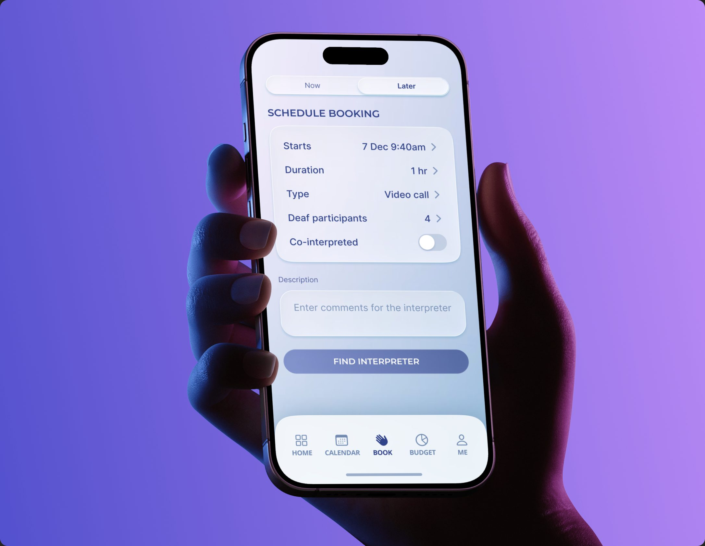
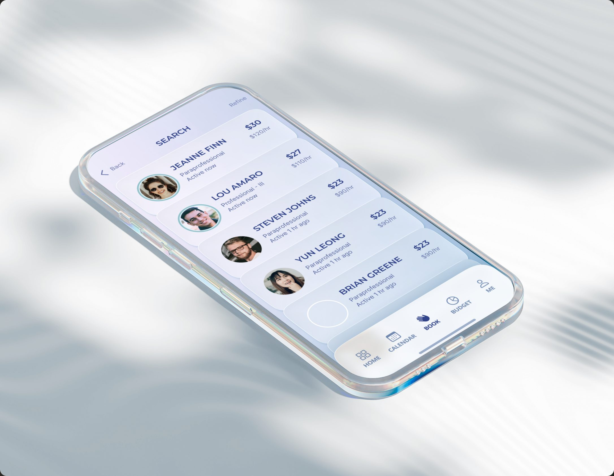
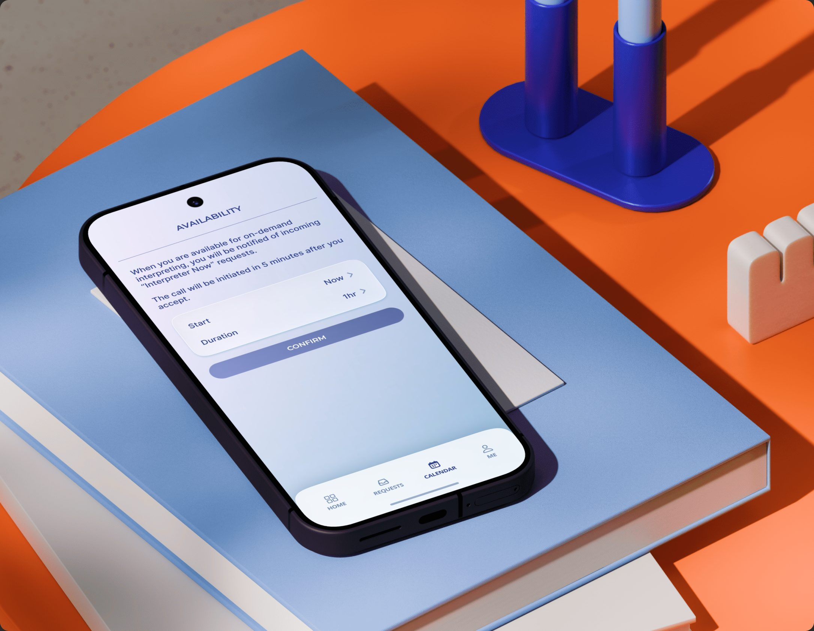
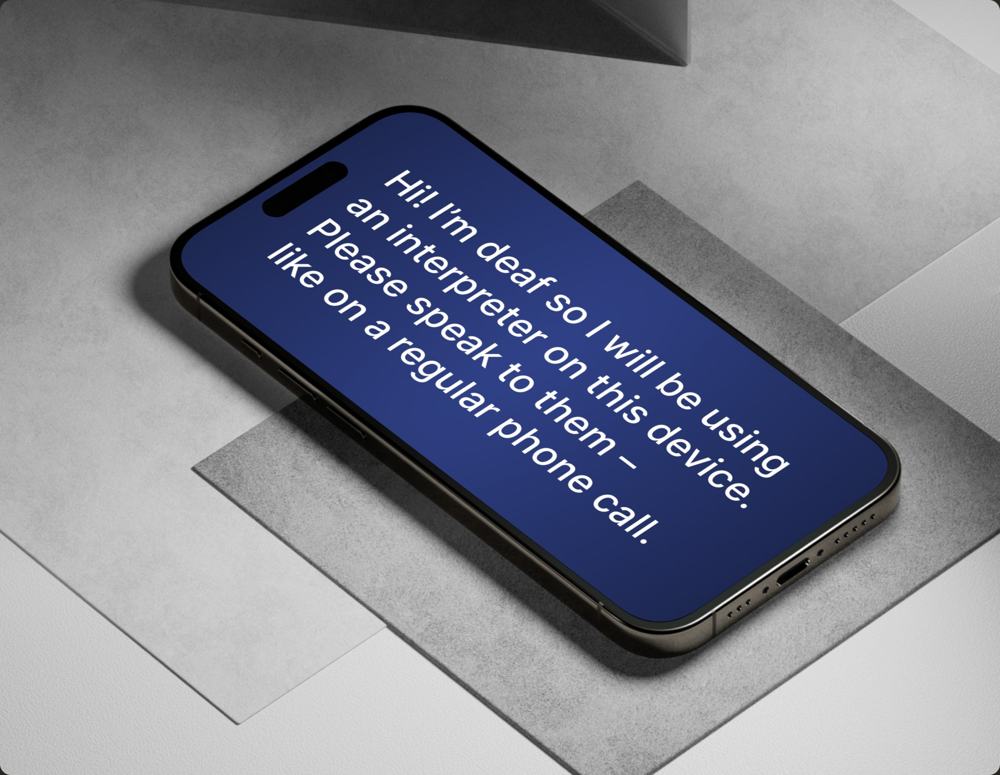
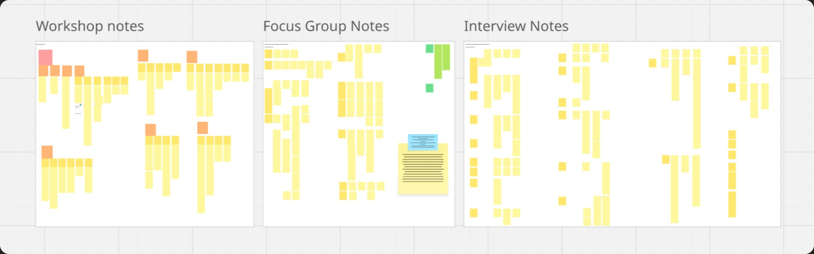
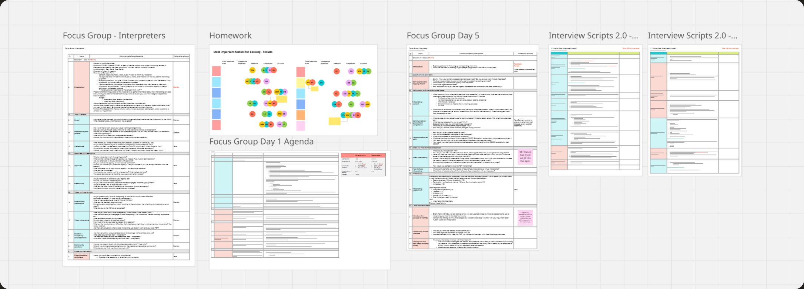
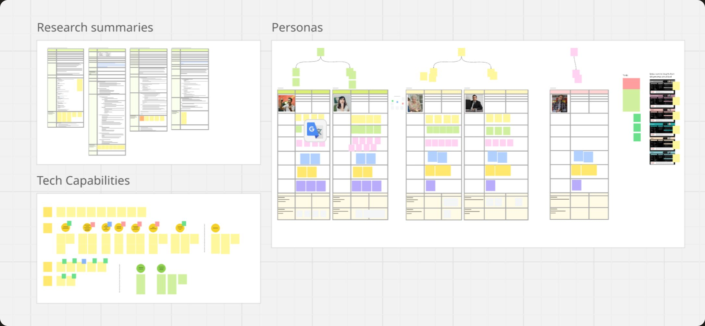
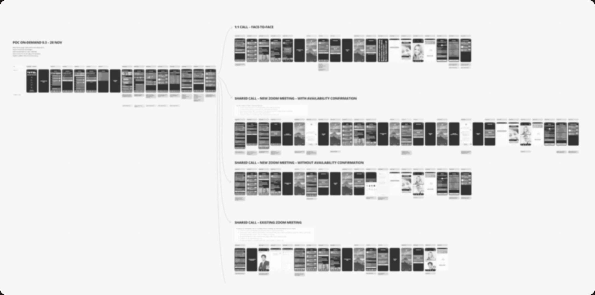

Social startup for the Deaf community: disability services
The problem
Deaf people often need a sign language interpreter on short notice, e.g. for a medical appointment. Current booking process with an agency is slow, rigid, and doesn’t match how life actually works.
The solution
On-demand booking platform connecting Deaf users with verified sign language interpreters (like Uber).
My role
E2E Product Design – user research, focus groups, questionnaires, personas, journey mapping, data analysis, stakeholder pitches, lo-fi, hi-fi, UI and handover. iOS PoC app delivered.

Process highlights: decision-making
We wanted to learn how Deaf users pick a good interpreter. During user testing, we asked participants to think aloud about their decision process and to share their impressions of the faces they saw.
They hesitated to accept anyone without a photo, and preferred a video preview of the interpreter signing, as signing styles differ a lot.
Focus groups proved extremely good for questions about decision-making: visual alignment scales let us discuss differences on the spot. For example, cost-related decisions differed a lot depending on who pays for disability services: the users themselves, their employer, the NDIS and so on.

My process
Research plan
- Business model canvas
- Informal user interview notes
- Draft personas
- Research questions
- Hypotheses list
- Session plan
Desktop research
- Competitor analysis
- Policy research
User research
- User focus group×3
- Provider interviews×5
- Insights analysis (affinity map)
- User survey (SurveyMonkey)
- Provider survey (SurveyMonkey)
- Data analysis
Design
- Personas
- Future-state journey map
- Booking process flows
- UI references / moodboard
- Figma prototype (6 iterations)
Validation
- 8×user testing sessions
- 1×user focus group
- 1×provider focus group
- Insights summary
PoC
- Technical requirements
- Working iOS PoC
- Development roadmap
- Pitch deck


Process highlights: establishing trust
For these conversations, it was very important to establish trust and psychological safety.
One trick that worked well: we added a signed video version of the questions to our SurveyMonkey survey. Deaf users can certainly read, but the video proved that our team has someone who actually signs and understands the domain well.




Stakeholder reviews
Daria is technically brilliant in her specialist area of digital design – when applying her craft of design she is creative, customer centric, and considerate of the overarching strategic business objective – her contribution in this area significantly supported the outcomes for the project, and were greatly appreciated. Daria also demonstrated great experience and insight in research to support design, and in product management – having in many regards fulfilled the role as product / project manager in addition to her design role.
Daria is technically strong (as outlined above) and her assertiveness and outcome focus are also strengths which should be leveraged to support future successful outcomes for our clients. Based on her contribution to this project, it is my firm view that Daria is outperforming relative to her peers.
Daria’s performance as a UX Designer with [the startup] was an excellent example of the company’s flourishing technology capability. Her time during Phase II of the [startup’s] project plan was marked by:
- Conducting multiple rounds of user research with Auslan interpreters and the Deaf community,
- Designing multiple iterations of the [booking] iOS app,
- Creating, delivering, and analysing survey results to validate research hypotheses and investigate areas of interest; and
- In supporting the implementation of a Proof of Concept, helping to guide its development and scope with an external vendor.
Some of the things I liked about working with Daria were:
- Efficiency – she’d follow through on tasks and requests promptly and to the times she committed
- Ability to record, prompt and manage multiple types of feedback from users and stakeholders, considering complexity and detail
- Iteration on designs and rounds of feedback in a clean and clear manner, shared appropriately with various groups and separated across Figma working files and links […]
- Comfort levels in facilitating and standing in for meetings with stakeholders and vendors, sometimes with me unavailable
- Taking the initiative to coordinate asynchronously with myself and other team members to ask questions and achieve outcomes across multiple, disparate arms of research
Throughout her time with [the startup], Daria has maintained a high level of professionalism. The team and I have depended upon her time and again to deliver great results. I hope that she has been able to take away from this project some lessons around operating earlier on in the design process (i.e. research methods, innovation and identification, realisation and valuation of opportunities), along with delivering in a smaller team and working with an external delivery agency.